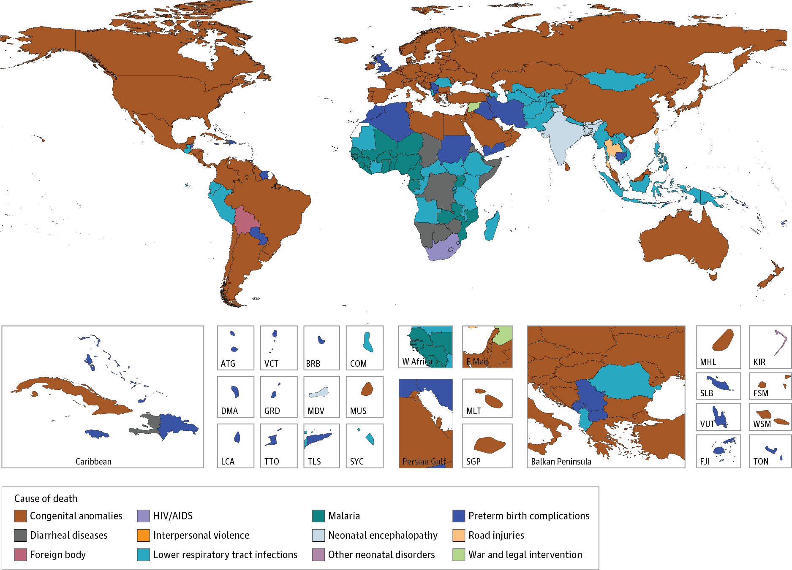

Name: Maureen A. Carey
Occupation: Graduate student researcher, soon to begin as a Postdoctoral Research Associate with Dr. William Petri
Affiliation: Microbiology, Immunology, and Cancer Biology at the University of Virginia, School of Medicine, soon to join the Division of Infectious Diseases and International Health at the University of Virginia, School of Medicine
PhD Mentors: Jason A. Papin and Jennifer L. Guler See here for Papin lab website and here for the Guler lab website.
Research Interests: I am interested in engineering solutions to public health problems.
In 2016, over 2.7 million children under the age of 5 years died due to preventable causes; infectious diseases such as malaria and diarrhea are among the top five killers of these children and, in many countries, are the leading cause of child mortality (see Fig. 1). The discrepancy in child mortality due to infection between high- and low/mid-income countries highlights the need to supplement clinical solutions with engineering approachs to extend disease prevention and treatment into lower income environments.
{width = 50%}
So far, my research has focused on understanding the metabolism of eukaryotic parasites (like the malaria parasite) to rationally design antimicrobials. My goal is to identify metabolic weaknesses of the parasite to design combination therapies to specifically target resistant parasites. The development of novel drugs is extremely expensive; thus, this approach is faster and lower cost by using existing drugs in new combinations. I use computational tools (i.e. genome-scale metabolic modeling, machine learning, and statistical models) to profile the phenotype of the malaria parasite, and supplement these tools with in vitro experiments.
Academic Interests: I am passionate about increasing diversity in the computational sciences. Computational sciences are underrepresented both in the international research community and by minorities in the United States.
Computational tools allow researchers to generate high-confidence, data-driven hypotheses before stepping in the lab - and are thus well-suited for use in research groups with limited funding. In addition to a lower start-up cost, computational research provides researchers more flexibility over their schedules, making it well-suited for those with additional responsibilities (i.e. parents, students with additional jobs, etc.).
In the United States, less than 20% of computer science or engineering undergraduate degrees are granted to women. The statistics for people of color are worse: less than 10% for both computer science or engineering undergraduate degrees. Representation drops for higher degrees (NSF, 2014). Moreover, few biologists are trained in programming or basic computer science, and this excludes the ‘problem’ driven students from entering the field of computational biology, leaving only students who entered the field from a technical background.
Thus, I wrote ‘Ten Simple Rules for biologists learning to program’ reflecting on my learning to program experience and with ten tips to self-taught programmers. I am interested in increasing diversity in science by providing engaged mentorship to support young scientists and research opportunities for aspiring scientists, and by investing in traditional diversity initiatives.